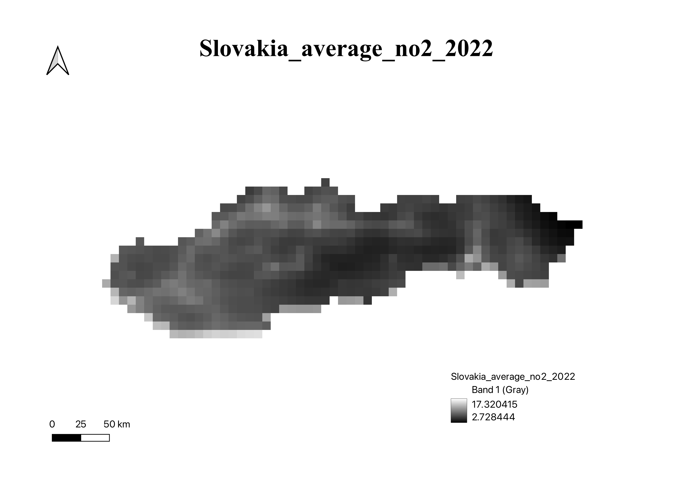
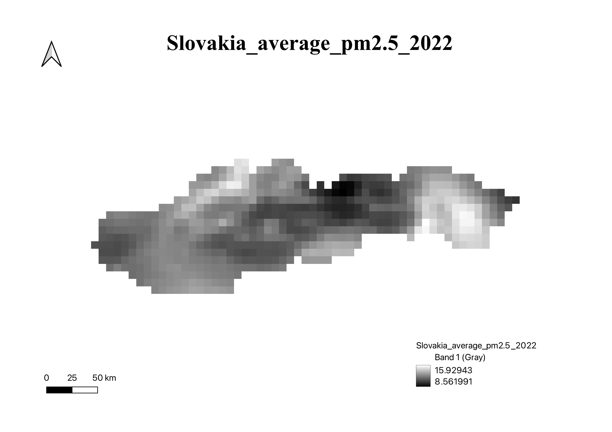
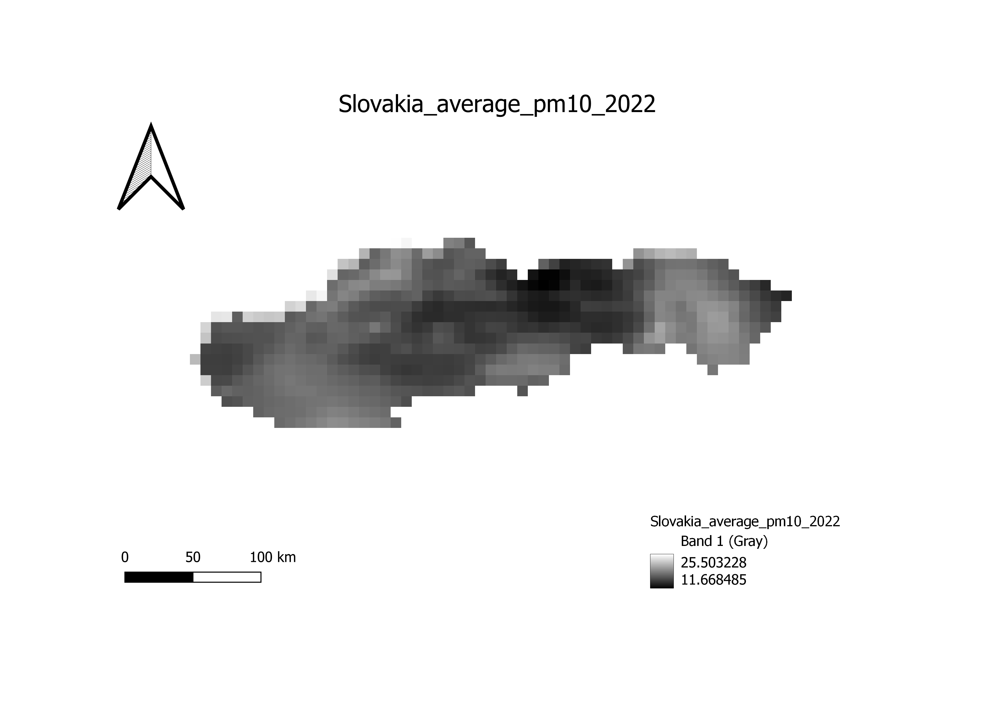
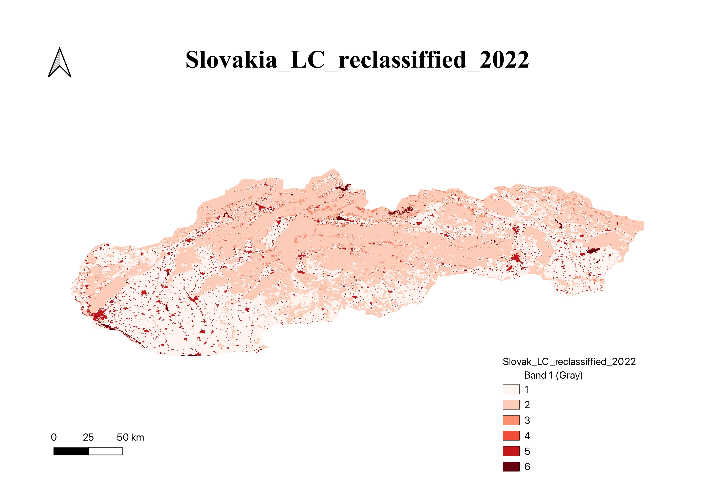
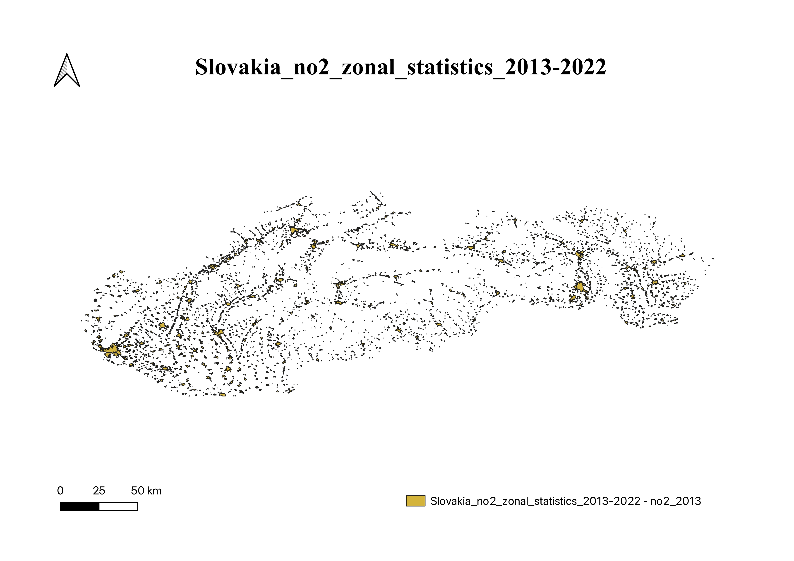
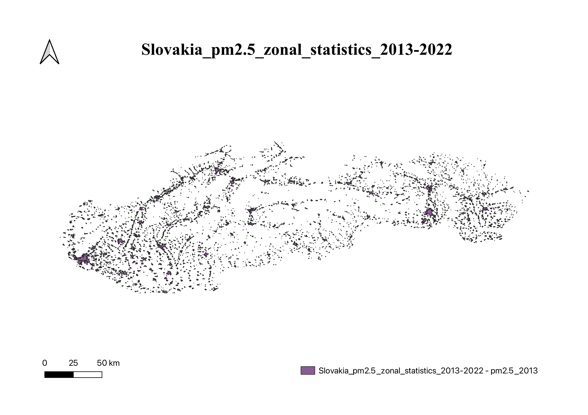
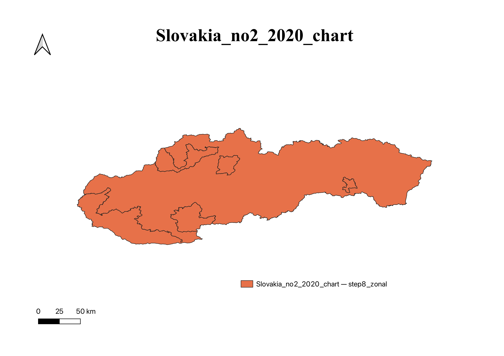
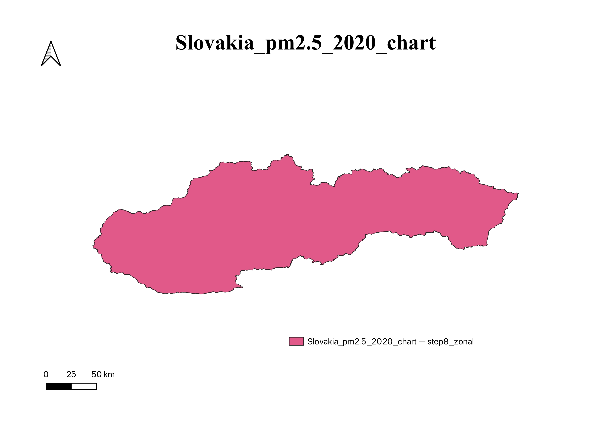

In this step, we aggregated monthly pollutant raster datasets—specifically NO₂ and PM2.5—into yearly averages for each year from 2013 to 2022. This was done using raster calculator operations in QGIS. After computing the mean values, each yearly raster was clipped to the national boundary of Slovakia to ensure consistency in spatial extent. The result is a set of uniform, yearly air quality maps for further analysis and visualization.



Step 2: Land Cover Processing
We imported and pre-processed the CORINE Land Cover dataset by clipping it to Slovakia’s boundaries. To simplify the analysis, we reclassified the detailed land cover types into broader IPCC categories such as Urban, Forest, Agricultural, and Water. This generalization facilitated more effective comparisons with air pollution data, allowing us to observe how different land use types relate to pollution levels.

Step 3: Trends over Land Cover
Using the reclassified land cover map and annual pollution rasters, we conducted zonal statistics to calculate average pollutant concentrations within each land cover type for each year. This allowed us to visualize and quantify long-term trends—such as whether urban zones consistently experience higher pollution, or if forest areas show decreasing levels over time—revealing how air quality changes in connection with land use.


Step 4: Population Exposure
By integrating population density raster data with the pollutant maps, we were able to assess how many people are living in areas that exceed recommended pollution thresholds. We classified pollution values into risk categories (e.g., low, medium, high) and calculated the total population exposed in each category. This step provided key insights into public health risks and highlighted the most affected regions in Slovakia.


Step 5: Bivariate Visualization
To effectively communicate the overlap between high pollution and population exposure, we created bivariate maps combining both layers. Each pixel on the map reflects the simultaneous value of pollution concentration and population density using a dual-color scale. These visualizations help identify high-priority zones where environmental and social vulnerabilities intersect, making them ideal tools for decision-makers and stakeholders.